04_pod控制器详解
这一章节是讲解 pod的编排和调度，就得用到诸多的控制器。
kubectl api-resources
# 查看k8s的资源有哪些
1.控制器作用
1. pod类型的资源，如果直接删除，不会重建
2. 控制器可以帮助用户监视、并且保证相应的节点上始终运行着用户定义好的pod副本数在运行。
3. 甚至pod超过、或者低于用户期望、定义好的pod副本数，控制器都会创建、删除pod副本数量。
2.控制器类型
RS控制器，按照用户期望的副本数量，创建POD。
Deployment控制器
- 通过控制RS控制器来始终确保POD的正确数量。
- 支持滚动更新、回滚、回滚默认保留10个版本
- 提供声名式配置，支持动态修改
-管理无状态应用，最理想的控制器
- node节点可能会是0个、多个POD
DaemonSet
一个节点只运行、且只有一个，必须运行的POD
StatefulSet
部署有状态应用控制器
3.创建ReplicationSet控制器
一般不直接用这个控制器，基本是Deployment工作。
官网资料
https://kubernetes.io/zh-cn/docs/concepts/workloads/controllers/replicationcontroller/#replicaset
https://kubernetes.io/zh-cn/docs/concepts/workloads/controllers/replicaset/
了解即可，直接重点学Deployment即可。
cat > nginx.rs.yml <<'EOF'
apiVersion: apps/v1
kind: ReplicaSet
metadata:
name: nginx-rs
spec:
# 按你的实际情况修改副本数
replicas: 4
selector:
matchLabels:
app: nginx
template:
metadata:
name: nginx-pod
labels:
app: nginx
spec:
containers:
- name: nginx-containers
image: nginx:1.14.0
imagePullPolicy: IfNotPresent
ports:
- name: http
containerPort: 80
EOF
字段解释
[root@k8s-master-10 ~]#kubectl explain ReplicaSet.spec.template
创建RS控制器
RS控制器就是个模板，定义一组POD的信息标准
[root@k8s-master-10 ~]#kubectl create -f rs-pod.yml
replicaset.apps/nginx-rs created
[root@k8s-master-10 ~]#kubectl get rs -o wide
NAME DESIRED CURRENT READY AGE CONTAINERS IMAGES SELECTOR
dep-nginx-779c7fd666 1 1 1 3d nginx nginx:1.14.0 app=dep-nginx,pod-template-hash=779c7fd666
nginx-rs 4 4 4 36s nginx-containers nginx:1.14.0 app=nginx
查看POD，基于标签选择器
[root@k8s-master-10 ~]#kubectl get pod -owide -l app=nginx
NAME READY STATUS RESTARTS AGE IP NODE NOMINATED NODE READINESS GATES
nginx-rs-4kznq 1/1 Running 0 101s 10.2.1.11 k8s-node-11 <none> <none>
nginx-rs-f524l 1/1 Running 0 101s 10.2.1.10 k8s-node-11 <none> <none>
nginx-rs-k7v2w 1/1 Running 0 101s 10.2.2.21 k8s-node-12 <none> <none>
nginx-rs-vvdsr 1/1 Running 0 101s 10.2.2.22 k8s-node-12 <none> <none>
[root@k8s-master-10 ~]#
试试访问4个POD的ip
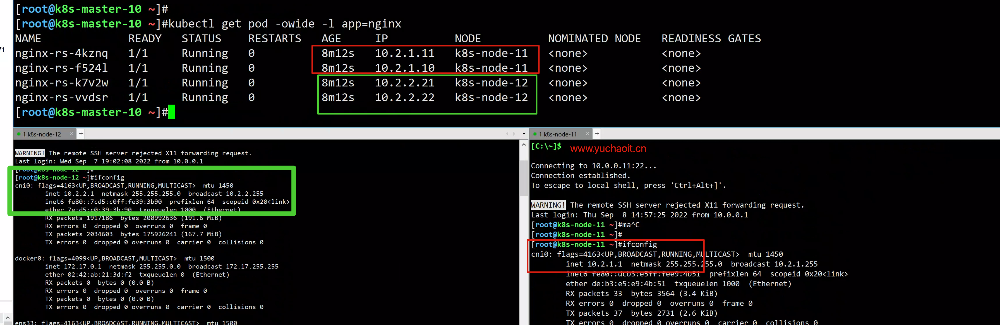
删除POD试试？
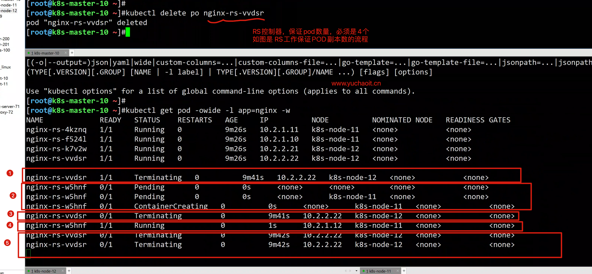
再查查最新的POD
[root@k8s-master-10 ~]#kubectl get po -l app=nginx
NAME READY STATUS RESTARTS AGE
nginx-rs-4kznq 1/1 Running 0 12m
nginx-rs-f524l 1/1 Running 0 12m
nginx-rs-k7v2w 1/1 Running 0 12m
nginx-rs-w5hnf 1/1 Running 0 2m30s
因此此类POD可以随意创建，得确保无状态特性。
ReplicaSet 的目的是维护一组在任何时候都处于运行状态的 Pod 副本的稳定集合。
因此，它通常用来保证给定数量的、完全相同的 Pod 的可用性。
修改RS控制器yaml
[root@k8s-master-10 ~]#grep 'replica' rs-pod.yml
replicas: 6
[root@k8s-master-10 ~]#
应用模板文件
[root@k8s-master-10 ~]#kubectl apply -f rs-pod.yml
Warning: kubectl apply should be used on resource created by either kubectl create --save-config or kubectl apply
replicaset.apps/nginx-rs configured
查看RS控制器更新结果
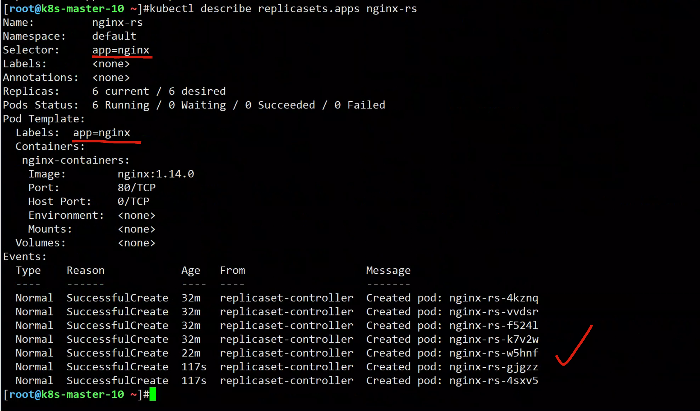
[root@k8s-master-10 ~]#kubectl get pod -owide -l app=nginx
NAME READY STATUS RESTARTS AGE IP NODE NOMINATED NODE READINESS GATES
nginx-rs-4kznq 1/1 Running 0 33m 10.2.1.11 k8s-node-11 <none> <none>
nginx-rs-4sxv5 1/1 Running 0 2m44s 10.2.1.13 k8s-node-11 <none> <none>
nginx-rs-f524l 1/1 Running 0 33m 10.2.1.10 k8s-node-11 <none> <none>
nginx-rs-gjgzz 1/1 Running 0 2m44s 10.2.2.23 k8s-node-12 <none> <none>
nginx-rs-k7v2w 1/1 Running 0 33m 10.2.2.21 k8s-node-12 <none> <none>
nginx-rs-w5hnf 1/1 Running 0 23m 10.2.1.12 k8s-node-11 <none> <none>
[root@k8s-master-10 ~]#
编辑RS控制器资源
[root@k8s-master-10 ~]#kubectl edit replicasets.apps nginx-rs
replicaset.apps/nginx-rs edited
修改副本数为2
查看rs控制器结果
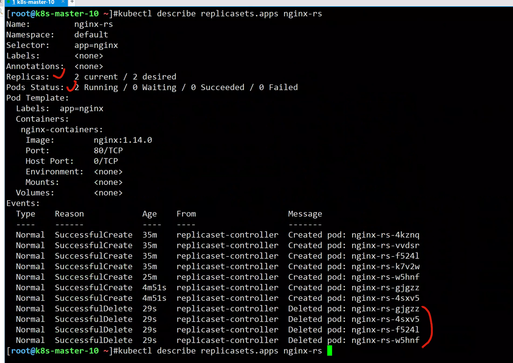
[root@k8s-master-10 ~]#kubectl get pod -owide -l app=nginx
NAME READY STATUS RESTARTS AGE IP NODE NOMINATED NODE READINESS GATES
nginx-rs-4kznq 1/1 Running 0 35m 10.2.1.11 k8s-node-11 <none> <none>
nginx-rs-k7v2w 1/1 Running 0 35m 10.2.2.21 k8s-node-12 <none> <none>
动态、扩、缩容POD
[root@k8s-master-10 ~]#kubectl scale rs nginx-rs --replicas=3
replicaset.apps/nginx-rs scaled
[root@k8s-master-10 ~]#kubectl get pod -owide -l app=nginx
NAME READY STATUS RESTARTS AGE IP NODE NOMINATED NODE READINESS GATES
nginx-rs-4kznq 1/1 Running 0 40m 10.2.1.11 k8s-node-11 <none> <none>
nginx-rs-6cqjw 1/1 Running 0 3s 10.2.1.14 k8s-node-11 <none> <none>
nginx-rs-k7v2w 1/1 Running 0 40m 10.2.2.21 k8s-node-12 <none> <none>
# 删除所有pod
[root@k8s-master-10 ~]#kubectl scale rs nginx-rs --replicas=0
replicaset.apps/nginx-rs scaled
[root@k8s-master-10 ~]#kubectl get rs nginx-rs
NAME DESIRED CURRENT READY AGE
nginx-rs 0 0 0 46m
[root@k8s-master-10 ~]#kubectl scale rs nginx-rs --replicas=3
replicaset.apps/nginx-rs scaled
[root@k8s-master-10 ~]#kubectl get rs nginx-rs
NAME DESIRED CURRENT READY AGE
nginx-rs 3 3 2 46m
[root@k8s-master-10 ~]#kubectl get pod -owide -l app=nginx
NAME READY STATUS RESTARTS AGE IP NODE NOMINATED NODE READINESS GATES
nginx-rs-d2tf2 1/1 Running 0 6s 10.2.1.16 k8s-node-11 <none> <none>
nginx-rs-nqnmk 1/1 Running 0 6s 10.2.2.24 k8s-node-12 <none> <none>
nginx-rs-nr2dh 1/1 Running 0 6s 10.2.1.15 k8s-node-11 <none> <none>
[root@k8s-master-10 ~]#
获取k8s运行中资源的yaml信息
[root@k8s-master-10 ~]#kubectl get rs nginx-rs -o yaml > /tmp/nginx-rs.yml
4.Deployment控制器
Deployment是什么
Pod是Kubernetes创建或部署的最小单位，但是Pod是被设计为相对短暂的一次性实体，Pod可以被驱逐（当节点资源不足时）、随着集群的节点崩溃而消失。
Kubernetes提供了Controller（控制器）来管理Pod，Controller可以创建和管理多个Pod，提供副本管理、滚动升级和自愈能力，其中最为常用的就是Deployment。
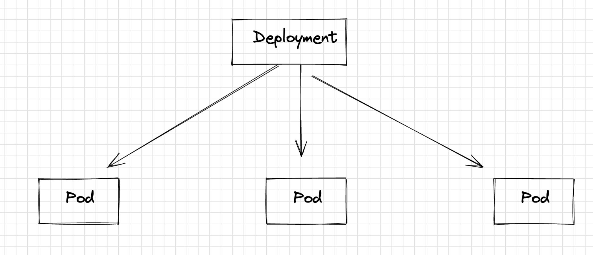
一个Deployment可以包含一个或多个Pod副本，每个Pod副本的角色相同，所以系统会自动为Deployment的多个Pod副本分发请求。
Deployment集成了上线部署、滚动升级、创建副本、恢复上线的功能。
在某种程度上，Deployment实现无人值守的上线，大大降低了上线过程的复杂性和操作风险。
虽然我们是创建的Deployment控制器，但是POD副本数，依然是由RS控制器保障。
Deployment是先创建RS控制器，然后RS控制POD副本。
yaml
https://kubernetes.io/zh-cn/docs/concepts/workloads/controllers/deployment/#label-selector-updates
从这个定义中可以看到
Deployment的名称为nginx-deployment
spec.replicas定义了Pod的数量，即这个Deployment控制2个Pod；
- spec.selector是Label Selector（标签选择器），表示这个Deployment会选择Label为app=nginx的Pod；
- spec.template是Pod的定义，内容与Pod中的定义完全一致。
apiVersion: apps/v1 # 注意这里与Pod的区别，Deployment是apps/v1而不是v1
kind: Deployment # 资源类型为Deployment
metadata:
name: nginx-deployment # Deployment的名称
namespace: yuchaoit
spec:
replicas: 2 # Pod的数量，Deployment会确保一直有2个Pod运行
selector: # Label Selector
matchLabels:
app: nginx
template: # Pod的定义，用于创建Pod，也称为Pod template
metadata:
labels:
app: nginx
spec:
containers:
- image: nginx:1.14.0
name: nginx-containers
imagePullPolicy: IfNotPresent
ports:
- name: http
containerPort: 80 # 指明容器内要暴露的端口
resources:
limits:
cpu: 100m
memory: 200Mi
requests:
cpu: 100m
memory: 200Mi
查看deployment字段帮助
[root@k8s-master-10 ~]#kubectl explain deployment.spec.template.spec.containers.ports
创建资源清单配置
将上面Deployment的定义保存到deployment.yaml文件中，使用kubectl创建这个Deployment。
使用kubectl get查看Deployment和Pod，可以看到READY值为2/2，前一个2表示当前有2个Pod运行，后一个2表示期望有2个Pod，AVAILABLE为2表示有2个Pod是可用的。
[root@k8s-master-10 ~]# kubectl create -f deployment-nginx.yml
deployment.apps/nginx-deployment created
# 查看创建出的POD副本
[root@k8s-master-10 ~]#kubectl -n yuchaoit get po -owide -l app=nginx
NAME READY STATUS RESTARTS AGE IP NODE NOMINATED NODE READINESS GATES
nginx-deployment-6f7886b6db-fr2bd 1/1 Running 0 43s 10.2.1.17 k8s-node-11 <none> <none>
nginx-deployment-6f7886b6db-t6mzj 1/1 Running 0 43s 10.2.2.25 k8s-node-12 <none> <none>
# 查看控制器，详细信息
[root@k8s-master-10 ~]#kubectl get deployments.apps -n yuchaoit
NAME READY UP-TO-DATE AVAILABLE AGE
nginx-deployment 2/2 2 2 6m33s
图解POD描述信息
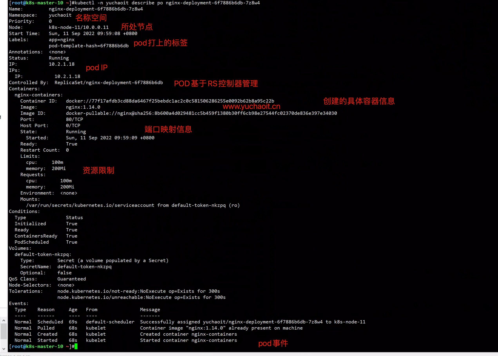
图解Deployment描述信息
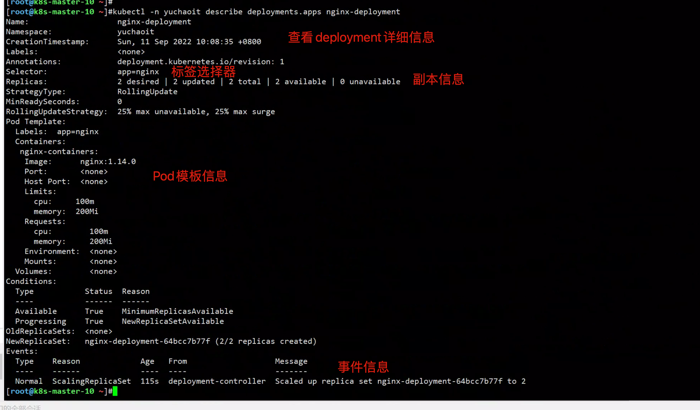
deployment如何控制pod
[root@k8s-master-10 ~]#kubectl -n yuchaoit get po
NAME READY STATUS RESTARTS AGE
nginx-deployment-64bcc7b77f-lwm2d 1/1 Running 0 22m
nginx-deployment-64bcc7b77f-nth5x 1/1 Running 0 22m
如果删掉一个Pod，您会发现立马会有一个新的Pod被创建出来
如下所示，这就是前面所说的Deployment会确保有2个Pod在运行，如果删掉一个，Deployment会重新创建一个，如果某个Pod故障或有其他问题，Deployment会自动拉起这个Pod。
[root@k8s-master-10 ~]#kubectl -n yuchaoit delete po nginx-deployment-64bcc7b77f-lwm2d
pod "nginx-deployment-64bcc7b77f-lwm2d" deleted
[root@k8s-master-10 ~]#kubectl -n yuchaoit get po
NAME READY STATUS RESTARTS AGE
nginx-deployment-64bcc7b77f-nth5x 1/1 Running 0 22m
nginx-deployment-64bcc7b77f-vt4kp 1/1 Running 0 17s
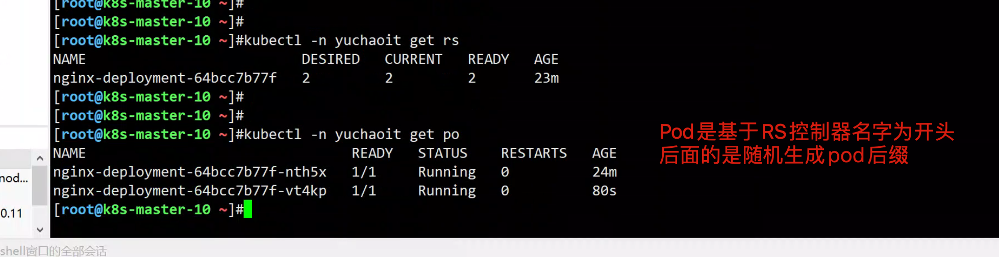
deployment和RS和pod关系
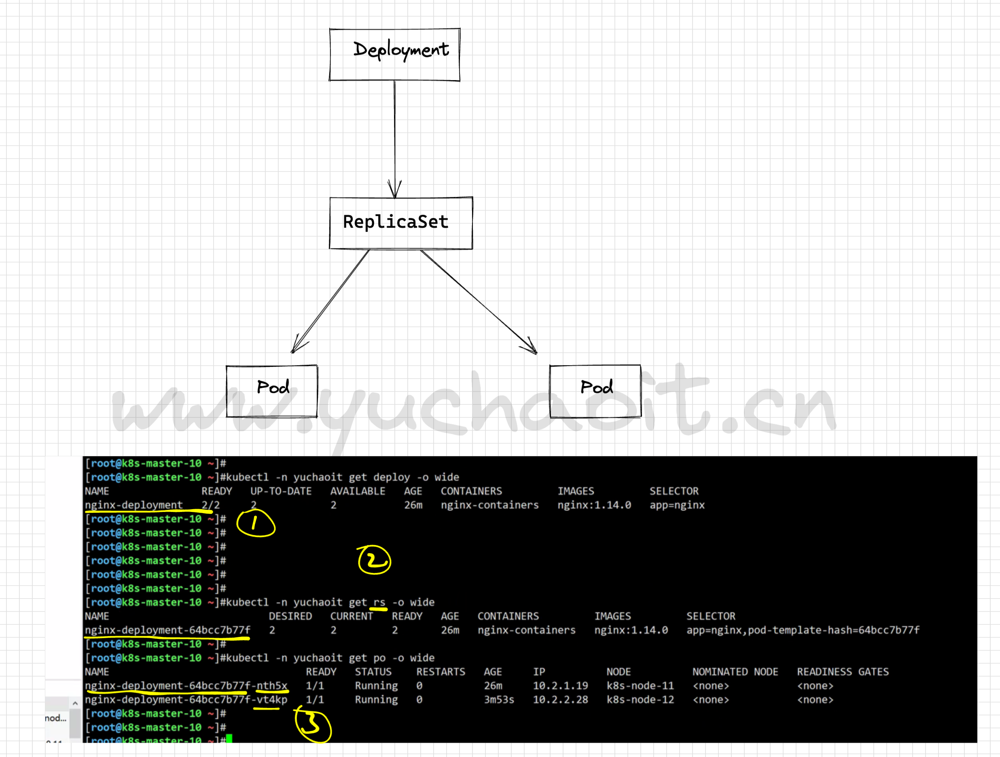
pod版本更新⭐️⭐️
在实际应用中，升级是一个常见的场景，Deployment能够很方便的支撑应用升级。
Deployment可以设置不同的升级策略，有如下两种。
- RollingUpdate：滚动升级，即逐步创建新Pod再删除旧Pod，为默认策略。
- Recreate：替换升级，即先把当前Pod删掉再重新创建Pod。
Deployment的升级可以是声明式的，也就是说只需要修改Deployment的YAML定义即可，
比如使用kubectl edit命令将上面Deployment中的镜像修改为nginx:alpine
修改完成后再查询ReplicaSet和Pod，发现创建了一个新的ReplicaSet，Pod也重新创建了。
# 注意，是修改Deployment控制器，实现对pod的更新
[root@k8s-master-10 ~]#kubectl -n yuchaoit edit deployments.apps nginx-deployment
deployment.apps/nginx-deployment edited
34 spec:
35 containers:
36 - image: nginx:latest
查看deployment更新事件
[root@k8s-master-10 ~]#kubectl -n yuchaoit describe deployments.apps nginx-deployment
# 创建了新的RS控制器
NewReplicaSet: nginx-deployment-5b78bc88d4 (2/2 replicas created)
Events:
Type Reason Age From Message
---- ------ ---- ---- -------
Normal ScalingReplicaSet 34m deployment-controller Scaled up replica set nginx-deployment-64bcc7b77f to 2
Normal ScalingReplicaSet 4m53s deployment-controller Scaled up replica set nginx-deployment-5b78bc88d4 to 1
Normal ScalingReplicaSet 4m32s deployment-controller Scaled down replica set nginx-deployment-64bcc7b77f to 1
Normal ScalingReplicaSet 4m32s deployment-controller Scaled up replica set nginx-deployment-5b78bc88d4 to 2
Normal ScalingReplicaSet 4m12s deployment-controller Scaled down replica set nginx-deployment-64bcc7b77f to 0
查看rs更新事件
# 旧的RS，已经不负责pod管理
[root@k8s-master-10 ~]#kubectl -n yuchaoit describe rs nginx-deployment-64bcc7b77f
# 新的RS，创建新的pod
[root@k8s-master-10 ~]#kubectl -n yuchaoit describe rs nginx-deployment-5b78bc88d4
查看pod更新事件
此时的pod，也是基于新的RS控制器创建了
[root@k8s-master-10 ~]#kubectl -n yuchaoit describe pod nginx-deployment-5b78bc88d4-
# pod和RS控制器关系
Controlled By: ReplicaSet/nginx-deployment-5b78bc88d4
deployment更新镜像原理图
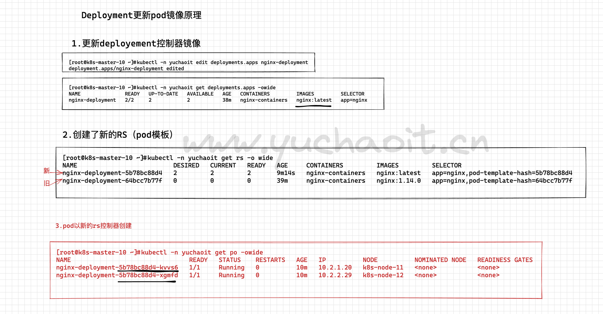
默认是滚动更新，逐步创建新pod、然后删除旧pod.
# 命令
[root@k8s-master-10 ~]#kubectl -n yuchaoit describe deployments.apps nginx-deployment
# 滚动更新事件
Events:
Type Reason Age From Message
---- ------ ---- ---- -------
Normal ScalingReplicaSet 42m deployment-controller Scaled up replica set nginx-deployment-64bcc7b77f to 2
Normal ScalingReplicaSet 12m deployment-controller Scaled up replica set nginx-deployment-5b78bc88d4 to 1
Normal ScalingReplicaSet 12m deployment-controller Scaled down replica set nginx-deployment-64bcc7b77f to 1
Normal ScalingReplicaSet 12m deployment-controller Scaled up replica set nginx-deployment-5b78bc88d4 to 2
Normal ScalingReplicaSet 11m deployment-controller Scaled down replica set nginx-deployment-64bcc7b77f to 0
查看滚动更新状态
[root@k8s-master-10 ~]# kubectl -n yuchaoit rollout status deployment nginx-deployment
deployment "nginx-deployment" successfully rolled out
蓝绿更新原理
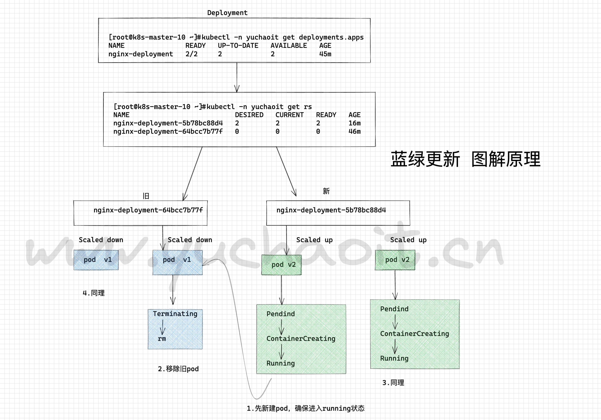
其他更新镜像命令
1.直接修改yaml文件，修改镜像（镜像就是容器运行的交付标准）
# 语法
# 结尾跟上容器名，修改镜像即可
[root@k8s-master-10 ~]#kubectl set image -f deployment-nginx.yml nginx-containers=nginx:1.21.5
deployment.apps/nginx-deployment image updated
[root@k8s-master-10 ~]#
2.还有可以直接选择控制器，进行镜像修改
[root@k8s-master-10 ~]#kubectl -n yuchaoit set image deployment nginx-deployment nginx-containers=nginx:1.15.0
deployment.apps/nginx-deployment image updated
依然是滚动更新过程
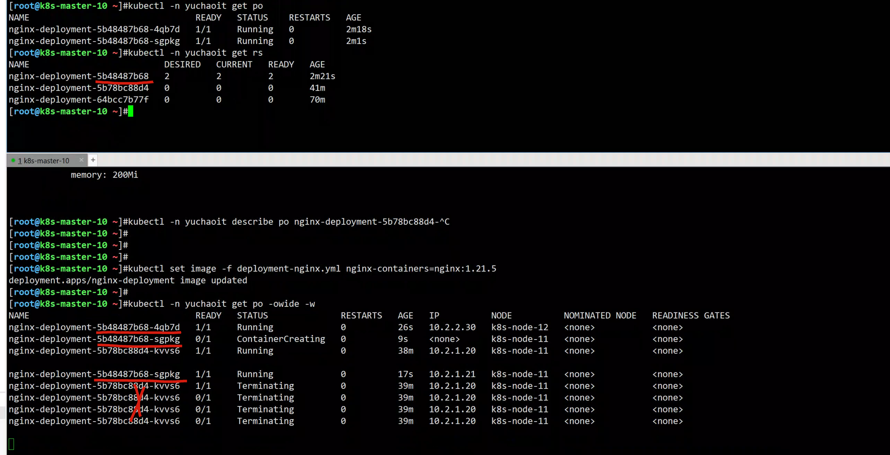
访问最新版本
[root@k8s-master-10 ~]#curl -I 10.2.1.21
HTTP/1.1 200 OK
Server: nginx/1.21.5
Date: Sun, 11 Sep 2022 03:22:01 GMT
Content-Type: text/html
Content-Length: 615
Last-Modified: Tue, 28 Dec 2021 15:28:38 GMT
Connection: keep-alive
ETag: "61cb2d26-267"
Accept-Ranges: bytes
pod回滚上一个版本
回滚也称为回退，即当发现升级出现问题时，让应用回到老的版本。
Deployment可以非常方便的回滚到老版本。
例如上面升级的新版镜像有问题，可以执行kubectl rollout undo命令进行回滚。
Deployment之所以能如此容易的做到回滚，是因为Deployment是通过ReplicaSet控制Pod的
升级后之前ReplicaSet都一直存在，Deployment回滚做的就是使用之前的ReplicaSet再次把Pod创建出来。
Deployment中保存ReplicaSet的数量可以使用revisionHistoryLimit参数限制，默认值为10。
[root@k8s-master-10 ~]#kubectl -n yuchaoit describe deployments.apps nginx-deployment
[root@k8s-master-10 ~]#kubectl -n yuchaoit rollout undo deployment nginx-deployment
deployment.apps/nginx-deployment rolled back
# 查看回滚上一个控制器的版本
[root@k8s-master-10 ~]#kubectl -n yuchaoit describe deployments.apps nginx-deployment
# 最新pod信息
[root@k8s-master-10 ~]#kubectl -n yuchaoit get po -owide
# 查看RS，很明显，回到上一个版本了
[root@k8s-master-10 ~]#kubectl -n yuchaoit get rs -owide
NAME DESIRED CURRENT READY AGE CONTAINERS IMAGES SELECTOR
nginx-deployment-5b48487b68 0 0 0 6m22s nginx-containers nginx:1.21.5 app=nginx,pod-template-hash=5b48487b68
nginx-deployment-5b78bc88d4 2 2 2 45m nginx-containers nginx:latest app=nginx,pod-template-hash=5b78bc88d4
nginx-deployment-64bcc7b77f 0 0 0 74m nginx-containers nginx:1.14.0 app=nginx,pod-template-hash=64bcc7b77f
[root@k8s-master-10 ~]#
pod指定版本记录回滚⭐️⭐️
全流程⭐️
# 清理旧环境，删除Deployment，也会删除对应的RS控制器记录
[root@k8s-master-10 ~]#kubectl delete -f deployment-nginx.yml
deployment.apps "nginx-deployment" deleted
# 修改镜像版本
[root@k8s-master-10 ~]#grep image deployment-nginx.yml
- image: nginx:1.14.0
imagePullPolicy: IfNotPresent
# 创建第一版pod，记录版本，添加参数 --record
[root@k8s-master-10 ~]#kubectl create -f deployment-nginx.yml --record
deployment.apps/nginx-deployment created
# 测试版本
[root@k8s-master-10 ~]#curl -s 10.2.2.32 -I |grep Server
Server: nginx/1.14.0
# 更新第二版 1.15.0
[root@k8s-master-10 ~]#kubectl -n yuchaoit set image deployment nginx-deployment nginx-containers=nginx:1.15.0
deployment.apps/nginx-deployment image updated
# 验证
[root@k8s-master-10 ~]#curl -s 10.2.1.24 -I |grep Server
Server: nginx/1.15.0
# 更新第三版1.16.0
kubectl -n yuchaoit set image deployment nginx-deployment nginx-containers=nginx:1.16.0
# 验证
[root@k8s-master-10 ~]#curl 10.2.1.25 -s -I |grep Server
Server: nginx/1.16.0
# 查看控制器所有的历史版本
[root@k8s-master-10 ~]#kubectl rollout history deployment nginx-deployment -n yuchaoit
deployment.apps/nginx-deployment
REVISION CHANGE-CAUSE
1 kubectl create --filename=deployment-nginx.yml --record=true
2 kubectl create --filename=deployment-nginx.yml --record=true
3 kubectl create --filename=deployment-nginx.yml --record=true
# 查看指定历史版本的信息
[root@k8s-master-10 ~]#kubectl rollout history deployment nginx-deployment -n yuchaoit --revision=1
# 回到指定版本
[root@k8s-master-10 ~]#kubectl rollout undo deployment nginx-deployment -n yuchaoit --to-revision=1
deployment.apps/nginx-deployment rolled back
[root@k8s-master-10 ~]#kubectl -n yuchaoit get po -owide
NAME READY STATUS RESTARTS AGE IP NODE NOMINATED NODE READINESS GATES
nginx-deployment-64bcc7b77f-6xb95 1/1 Running 0 5s 10.2.1.26 k8s-node-11 <none> <none>
nginx-deployment-64bcc7b77f-jxwzd 1/1 Running 0 5s 10.2.2.35 k8s-node-12 <none> <none>
[root@k8s-master-10 ~]#curl -s -I 10.2.2.35 |grep Server
Server: nginx/1.14.0
[root@k8s-master-10 ~]#
扩缩容deployment
[root@k8s-master-10 ~]#kubectl -n yuchaoit scale deployment nginx-deployment --replicas=5
deployment.apps/nginx-deployment scaled
[root@k8s-master-10 ~]#kubectl -n yuchaoit get po -owide -w
NAME READY STATUS RESTARTS AGE IP NODE NOMINATED NODE READINESS GATES
nginx-deployment-64bcc7b77f-6xb95 1/1 Running 0 72s 10.2.1.26 k8s-node-11 <none> <none>
nginx-deployment-64bcc7b77f-fgbdq 1/1 Running 0 3s 10.2.1.27 k8s-node-11 <none> <none>
nginx-deployment-64bcc7b77f-jbf9d 1/1 Running 0 3s 10.2.2.36 k8s-node-12 <none> <none>
nginx-deployment-64bcc7b77f-jxwzd 1/1 Running 0 72s 10.2.2.35 k8s-node-12 <none> <none>
nginx-deployment-64bcc7b77f-lrxrx 1/1 Running 0 3s 10.2.2.37 k8s-node-12 <none> <none>
# 缩容
[root@k8s-master-10 ~]#kubectl -n yuchaoit scale deployment nginx-deployment --replicas=1
deployment.apps/nginx-deployment scaled
[root@k8s-master-10 ~]#kubectl -n yuchaoit get po -owide
NAME READY STATUS RESTARTS AGE IP NODE NOMINATED NODE READINESS GATES
nginx-deployment-64bcc7b77f-6xb95 1/1 Running 0 108s 10.2.1.26 k8s-node-11 <none> <none>
[root@k8s-master-10 ~]#
5.DaemonSet控制器
DaemonSet是这样一种对象（守护进程），它在集群的每个节点上运行一个Pod，且保证只有一个Pod，这非常适合一些系统层面的应用，例如日志收集、资源监控等，这类应用需要每个节点都运行，且不需要太多实例，一个比较好的例子就是Kubernetes的kube-proxy。
DaemonSet跟节点相关，如果节点异常，也不会在其他节点重新创建。
该控制器，简单说就是使用在需要在每一个机器上都运行一个POD。
这种场景，完美适合日志收集的客户端部署
或容器监控的客户端。
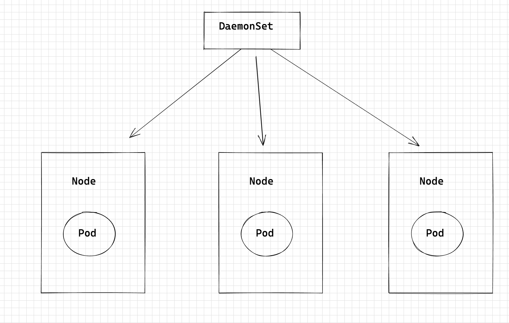
yaml示例
apiVersion: apps/v1
kind: DaemonSet
metadata:
name: nginx-ds
labels:
app: nginx-ds
namespace: yuchaoit
spec:
selector:
matchLabels:
app: nginx-ds
template:
metadata:
labels:
app: nginx-ds
spec:
nodeSelector: # 节点选择，当节点拥有daemon=need时才在节点上创建Pod
daemon: need
containers:
- name: nginx-ds
image: nginx:alpine
resources:
limits:
cpu: 250m
memory: 512Mi
requests:
cpu: 250m
memory: 512Mi
这里可以看出没有Deployment或StatefulSet中的replicas参数，因为是每个节点固定一个。
Pod模板中有个nodeSelector，指定了只在有“daemon=need”的节点上才创建Pod，如下图所示，DaemonSet只在指定标签的节点上创建Pod。
如果需要在每一个节点上创建Pod可以删除该标签。
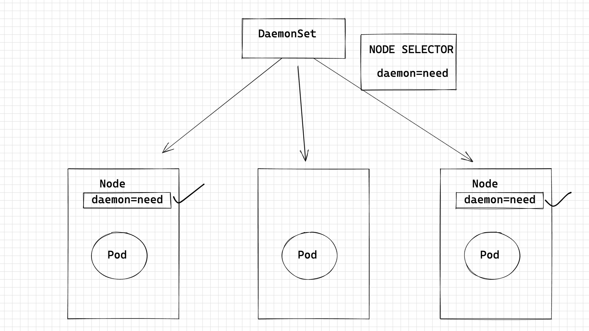
创建ds控制器
[root@k8s-master-10 ~]#kubectl create -f ds-nginx.yml
daemonset.apps/nginx-ds created
[root@k8s-master-10 ~]#
[root@k8s-master-10 ~]#kubectl -n yuchaoit get ds
NAME DESIRED CURRENT READY UP-TO-DATE AVAILABLE NODE SELECTOR AGE
nginx-ds 0 0 0 0 0 daemon=need 11s
[root@k8s-master-10 ~]#
发现没有任何的pod生成？
因为这里多了一个节点选择器
daemon=need
查看所有机器的标签信息
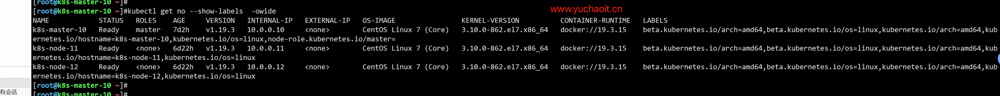
给机器加上标签
[root@k8s-master-10 ~]#kubectl label nodes k8s-node-12 daemon=need
node/k8s-node-12 labeled
[root@k8s-master-10 ~]#
[root@k8s-master-10 ~]#kubectl -n yuchaoit get ds
NAME DESIRED CURRENT READY UP-TO-DATE AVAILABLE NODE SELECTOR AGE
nginx-ds 1 1 1 1 1 daemon=need 5m14s
[root@k8s-master-10 ~]#kubectl -n yuchaoit get po -owide
NAME READY STATUS RESTARTS AGE IP NODE NOMINATED NODE READINESS GATES
nginx-deployment-64bcc7b77f-6xb95 1/1 Running 0 149m 10.2.1.26 k8s-node-11 <none> <none>
nginx-ds-v56lh 1/1 Running 0 15s 10.2.2.38 k8s-node-12 <none> <none>
[root@k8s-master-10 ~]#
[root@k8s-master-10 ~]#curl -s -I 10.2.2.38 |grep Server
Server: nginx/1.21.5
[root@k8s-master-10 ~]#
基于标签选择node
[root@k8s-master-10 ~]#kubectl get no --show-labels -owide -l daemon=need
NAME STATUS ROLES AGE VERSION INTERNAL-IP EXTERNAL-IP OS-IMAGE KERNEL-VERSION CONTAINER-RUNTIME LABELS
k8s-node-12 Ready <none> 6d22h v1.19.3 10.0.0.12 <none> CentOS Linux 7 (Core) 3.10.0-862.el7.x86_64 docker://19.3.15 beta.kubernetes.io/arch=amd64,beta.kubernetes.io/os=linux,daemon=need,kubernetes.io/arch=amd64,kubernetes.io/hostname=k8s-node-12,kubernetes.io/os=linux
再加一个节点
[root@k8s-master-10 ~]#kubectl label nodes k8s-node-11 daemon=need
node/k8s-node-11 labeled
[root@k8s-master-10 ~]#
[root@k8s-master-10 ~]#kubectl -n yuchaoit get po
NAME READY STATUS RESTARTS AGE
nginx-deployment-64bcc7b77f-6xb95 1/1 Running 0 153m
nginx-ds-hl4rj 1/1 Running 0 3s
nginx-ds-v56lh 1/1 Running 0 4m8s
[root@k8s-master-10 ~]#kubectl -n yuchaoit get ds
NAME DESIRED CURRENT READY UP-TO-DATE AVAILABLE NODE SELECTOR AGE
nginx-ds 2 2 2 2 2 daemon=need 9m34s
[root@k8s-master-10 ~]#
删除ds下的pod
取消标签即可
[root@k8s-master-10 ~]#kubectl label nodes k8s-node-12 daemon-
node/k8s-node-12 labeled
[root@k8s-master-10 ~]#kubectl -n yuchaoit get ds
NAME DESIRED CURRENT READY UP-TO-DATE AVAILABLE NODE SELECTOR AGE
nginx-ds 1 1 1 1 1 daemon=need 10m